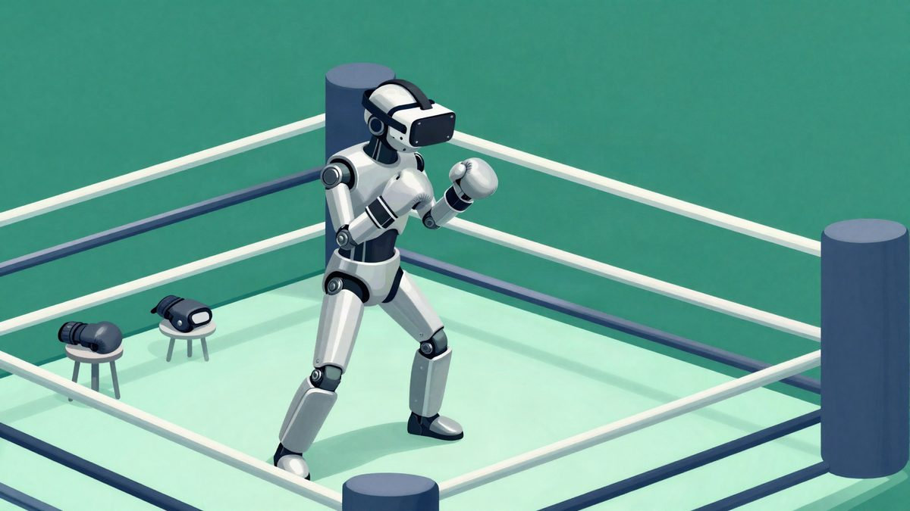
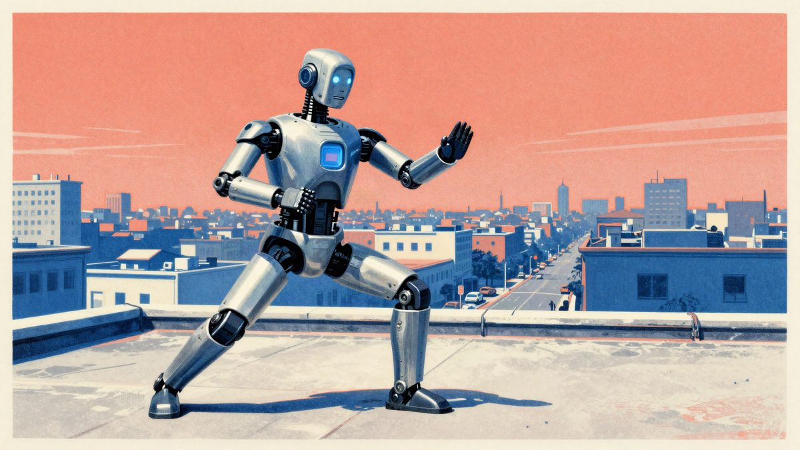
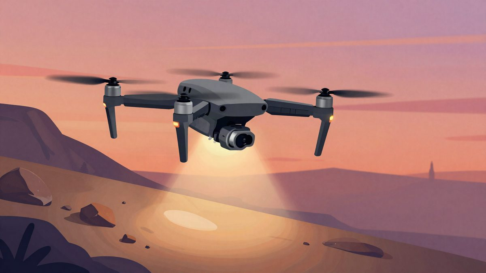

REK je predstavio S.T.E.E.L, sustav kojim čovjek upravlja borbenim humanoidnim robotom

Američka liga robotskih borbi REK predstavila je 11. studenoga sustav za daljinsko upravljanje S.T.E.E.L. Pokrete operatera putem VR-a ili motion capturea prenosi na humanoidnog robota u stvarnom vremenu, a robot ih izvodi kao boksačke i druge borbene pokrete. REK navodi da je razvoj trajao oko pet mjeseci, a model robota, latencija, datum prvog događaja i cijena još nisu poznati.
Američka liga humanoidnih robota za borbe REK predstavila je 11. studenoga novi sustav za daljinsko upravljanje pod nazivom S.T.E.E.L. Sustav pokrete čovjeka u stvarnom vremenu prenosi na robota, koji ih izvodi kao borbene pokrete, među ostalim i boks.
Operater upravlja robotom pomoću VR uređaja ili opreme za motion capture. Kad zada udarac, robot ga ponavlja gotovo istodobno. Koncept podsjeća na film Real Steel iz 2011., u kojem ljudi s ruba ringa upravljaju robotima boksačima.
Pet mjeseci razvoja
REK navodi da je tehnologiju upravljanja razvijao oko pet mjeseci temeljenu na umjetnoj inteligenciji, prilagođenu borbama u stvarnom vremenu. REK navodi da je oko pet mjeseci razvijao tehnologiju upravljanja temeljenu na umjetnoj inteligenciji, prilagođenu borbama u stvarnom vremenu.
Predstavljena je tek početna verzija sustava.
Što slijedi
REK planira tehnologiju iskoristiti na događajima s robotskim borbama. REK planira tehnologiju iskoristiti na događajima s robotskim borbama.
S.T.E.E.L je primjer teleoperacije humanoidnih robota, u kojoj čovjek preko VR-a ili motion capturea preuzima kontrolu nad robotskim tijelom. REK je tu tehnologiju za sada pokazao u borbenom kontekstu.
Izvor: ETNews (전자신문)
Povezani članci

Unitree H2-X: humanoidni robot koji tvrdi da može podići auto i izvoditi borilačke vještine22. listopada 2026. Google Intelligent Eyewear: Android XR naočale koje rade i s iPhoneom12. studenoga 2026.
Google Intelligent Eyewear: Android XR naočale koje rade i s iPhoneom12. studenoga 2026.
DJI Matrice 5T: dron s 1K termalnom kamerom za potragu u potpunom mraku i lošem vremenu7. studenoga 2026.